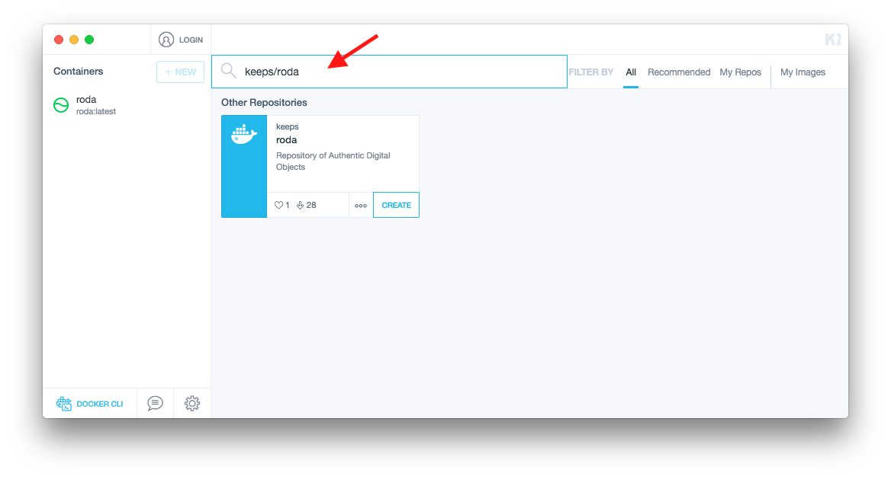

RODA 2.0 - Repository of Authentic Digital Objects
What is RODA?
RODA is a complete digital repository that delivers functionality for all the main units of the OAIS reference model. RODA is capable of ingesting, managing and providing access to the various types of digital objects produced by large corporations or public bodies. RODA is based on open-source technologies and is supported by existing standards such as the OAIS, METS, EAD and PREMIS.
Some technical information about RODA
- Uses native file system or Fedora 4 for digital object storage
- Uses any XML format as descriptive metadata
- Uses PREMIS for preservation metadata
- Has a configurable multi-step ingestion workflow
- Supports LDAP and CAS for authentication & authorization
- Supports pluggable preservation actions
- Has a user friendly graphical user interface based on GWT
For more information, please fell free to visit RODA website: http://www.roda-community.org
Install and run
Demo mode (based on docker containers)
Windows and MacOS X
Install Kitematic Docker Toolbox, search for keeps/roda and create and run the container. Click on the top-right button to open RODA (it might take a minute to initialize).


Linux
On Linux, as Kitematic Docker Toolbox is not yet available, use the following instructions:
- Install docker for your system: https://docs.docker.com/engine/installation/
- Pull or update to the latest roda container, on the command line run:
sudo docker pull keeps/roda - Run the container:
sudo docker run -p 8080:8080 -v ~/.roda:/root/.roda keeps/roda - Access RODA on your browser: http://localhost:8080
NOTE: the docker commands only need sudo if your user does not belong to the docker group.
Production mode
To install RODA from base, i.e. without containers, see the base install instructions.
Quick start
Please log in with the following credentials:
- Username: admin
- Password: roda
With this you will have access to all features.
Then you can start using RODA:
- Go to Catalogue and click the button NEW, select Dublin Core and fill the title of your new collection
- Go to Ingest > Transfer and upload files (e.g. PDF) or SIPs made by RODA-in. SIPs will have metadata while PDFs wont. To know how to use RODA-in watch the tutorials.
- After upload, select the SIPs or files to ingest on the checkbox and click the button PROCESS on the sidebar under the section Ingest.
- Now configure the ingest workflow, select the SIP format, if you upload a file select Uploaded file/folder, if you uploaded a SIP select the SIP format (E-ARK or Bagit).
- Under the Parent Object you can select the new collection you created above
- After configuring ingest click the CREATE button
- Now ingest will start and you can see the status of it at Ingest > Process, you can also inspect the status by clicking the table row
- When finished you can go to Catalogue or Search to find your new ingested content
Developers
To start developing for RODA check the Developer guide which has information on:
- How to get the source code
- How the code is laid out
- How to set up the development environment
- How to contribute